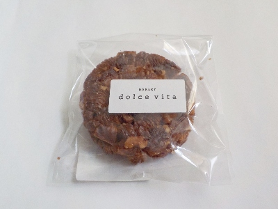
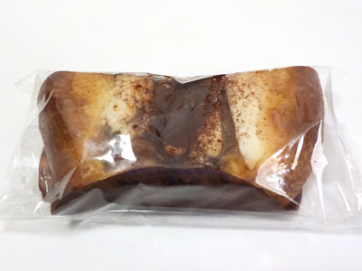
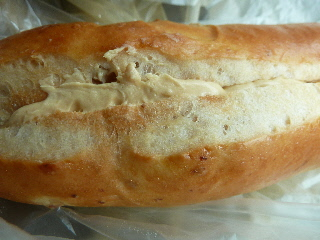

ドルチェビータのクロッカン。
2024/03/14

キレイな形でお洒落な感じがするクロッカンです。パン屋さんのクロッカンなので、パン味が効いてて香ばしくてカリカリっとしていました。
いいお菓子ですね。
島根県大田市長久町稲用192-6
2024/03/14

キレイな形でお洒落な感じがするクロッカンです。パン屋さんのクロッカンなので、パン味が効いてて香ばしくてカリカリっとしていました。
いいお菓子ですね。
2024/02/03

パン屋さんのティラミスなので、パンの上にチーズとココアが乗っています。
ヘリにはパンしかないですが、この中が黄色いパンが甘くて美味しかったです。チーズも割と多くて良かったです。
2012/06/16

大田市大田町のパン屋さんドルチェ・ビータのパンです。 初めて行ったんですが、商工会議所の横なので分かり易かったです。
（以前の住所 島根県大田市大田町大田イ307-4）
柔らかいパンで、甘いクリームが入っていて美味しかったです。
また買いに行きたいです。